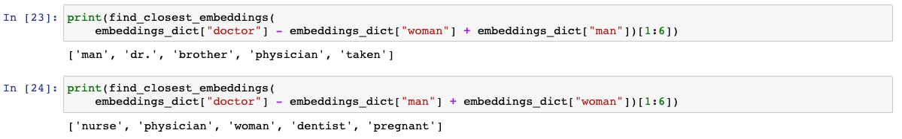
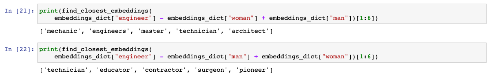

Dataset¶
Word vectors are the magic component making the clustering work.
GloVE¶
To summarize, word vectors are the numeric representation of the meaning of a word. They represent words as multidimensional numbers that group together to semantically similar words (Ahire, 2018).
With this figured out, I just needed a word vector dataset to work with. Fortunately, Stanford scientists developed an open-source ML model that could quickly get semantically similar words of any text in the vector space (Pennington, Socher, & Manning, 2014). The datasets come in different sizes. The one I worked on had 400,000 English words.
To be specific, the meaning that these words are given in a mathematical interpretation is obtained from a corpus of text, which was given to train the Machine Learning model.
Gender bias¶
I must admit that I am not aware of what are the texts that build this corpus. They could be any type of literature and writings, like websites, articles, books, blogs, news, or maybe all of them combined. This may cause several defaulted assumptions from the texts that don’t follow current ethical standards, like gender bias roles.
 {kind=link}
{kind=link}